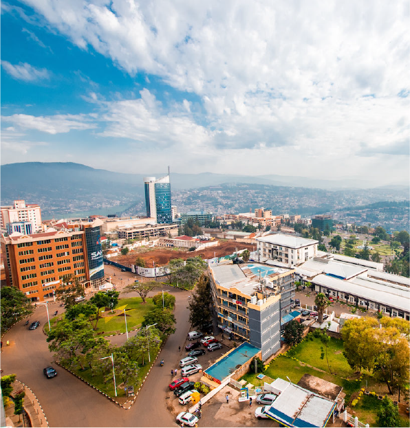
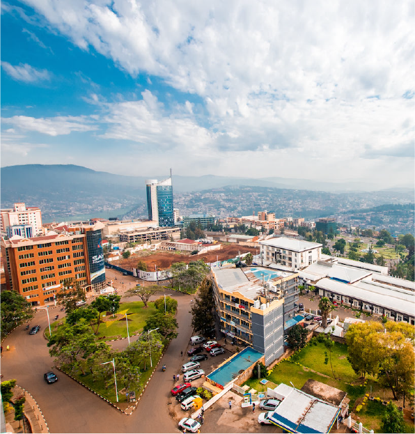
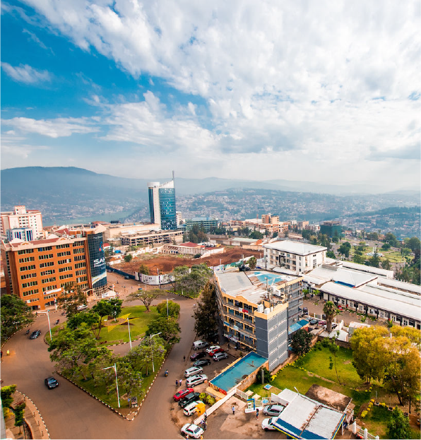

Country: Rwanda
Province: City of Kigali
Area: 166.7 km²
Mayor: Samuel Dusengiyumva
District Executive Administrator (DEA): Antoine Mutsinzi
Deputy District Executive Administrator: Monique Huss
Director of General Services: Murenzi M. Donatien
Sectors:
Cells: 41
Villages: 333
